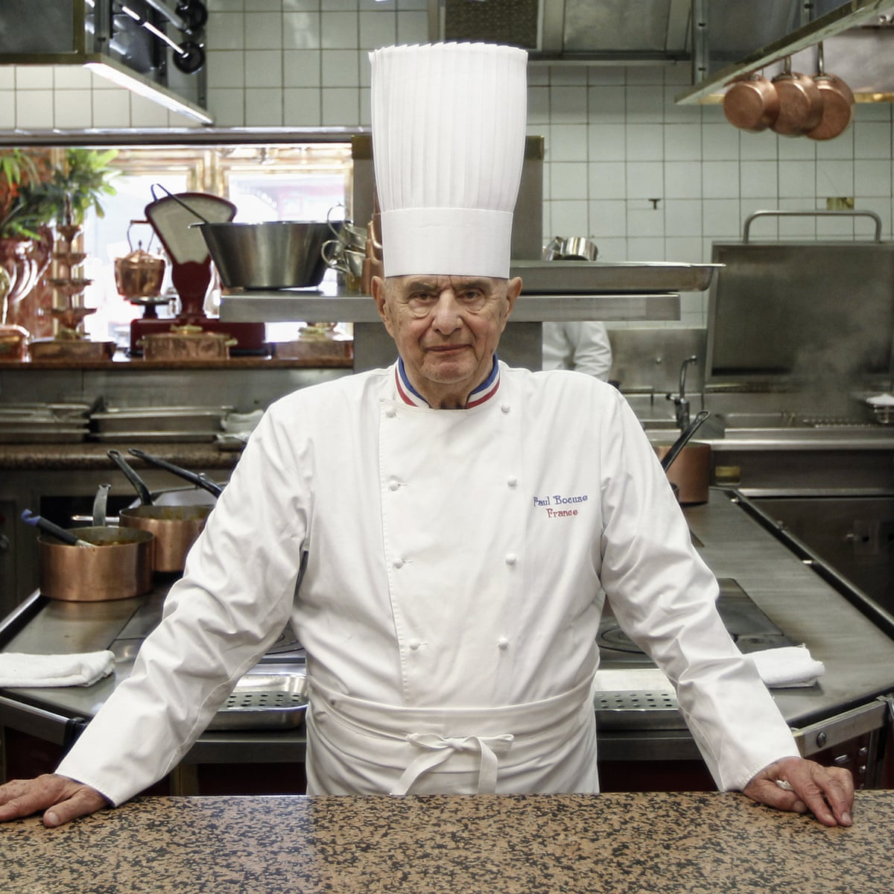
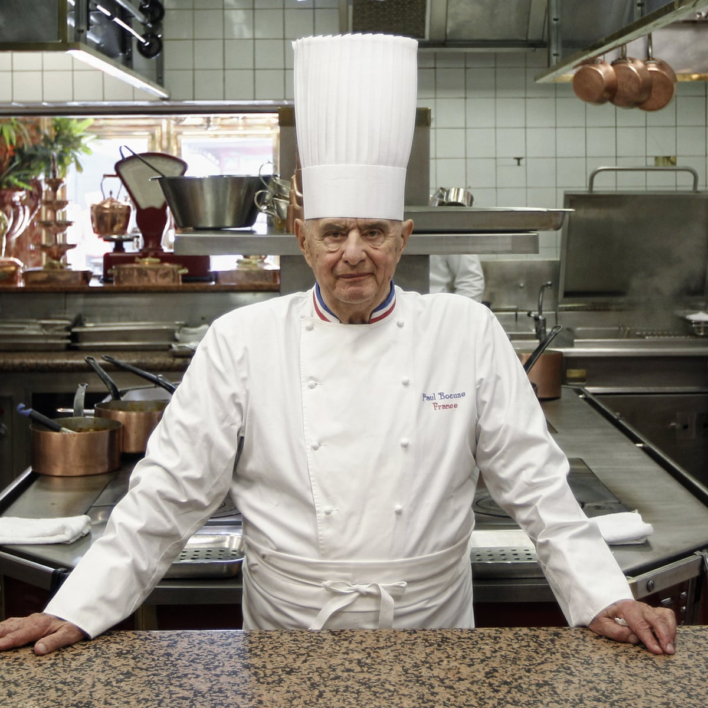
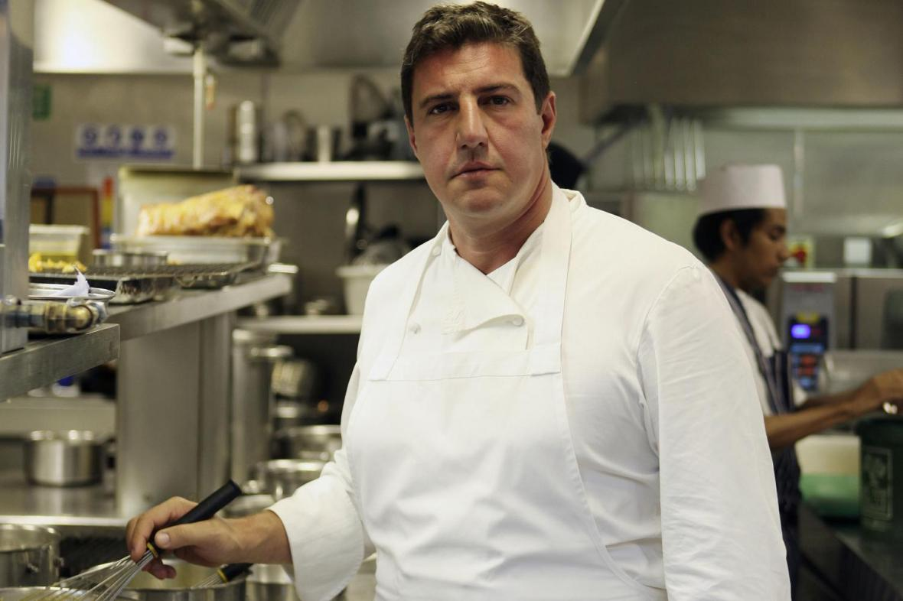
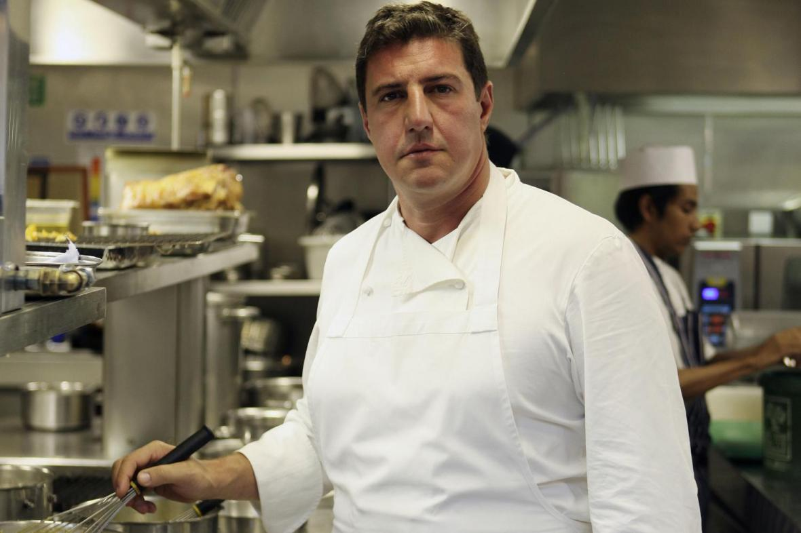

Who we are
Our story
Established in 2005, Waffles & Pancakes started as a humble locally-owned restaurant serving breakfast and brunch in the heart of the city. For over 15 years, we offer a unique coffee house environment unlike any other in Kuala Lumpur. We are not only a place to drop in and get your morning cup of coffee (although you are more than welcome to do that), we are a place where you can sit down and enjoy that tailor-made cup of coffee together with our waffles and pancakes. If you need to work, we have a seating area created specifically for you. We offer a delicious variety of drinks made by our professionally trained baristas. All of our sauces & syrups are made in-house with all natural ingredients ensuring you the highest quality in taste & health. We look forward to serving you at Waffles & Pancakes!Our chefs
Chef Stéphane Frelon
 Chef Stephane Frelon was born in Tours, France and obtained his first professional chef qualification in 1992. Stephane started his professional career as a cook apprentice as early as 1990 at Hotel-Restaurant Le Prieué in Nouzilly, France. Then, he was the executive chef and manager in several restaurants such as Restaurant-Brasserie A L’Aventure in Montréal, Canada and Restaurant Gastronomique La Fourchette in Brighton, England between 1997 - 2013 before continuing pursuing his passion in cooking by opening his own restaurant, Le diable O’Thym and Le Diable D’Thym back in France.
 Chef Stephane Frelon was born in Tours, France and obtained his first professional chef qualification in 1992. Stephane started his professional career as a cook apprentice as early as 1990 at Hotel-Restaurant Le Prieué in Nouzilly, France. Then, he was the executive chef and manager in several restaurants such as Restaurant-Brasserie A L’Aventure in Montréal, Canada and Restaurant Gastronomique La Fourchette in Brighton, England between 1997 - 2013 before continuing pursuing his passion in cooking by opening his own restaurant, Le diable O’Thym and Le Diable D’Thym back in France.
Chef Sylvain Dubreau
 Creativity and determination have always been the earmarks of Chef Sylvain Dubreau’s career. Upon gaining his professional certificates from the Centre de Formation d’Apprentissage in St. Germain de Lesignan in 1991, Chef Sylvain spent fourteen years honing his craft and mastering the arts of French cuisine at the Grandes Maisons area in Paris, where many Michelin-starred restaurants and hotels are located. His world travels began at the Michelin-star La Melazane by Gourmard restaurant at the Hilton Resort in Mauritius in 2004, before moving on to spend 5 years at world-famous Lotte Hotel in Seoul, South Korea. Keen to experience the challenges of restaurant-ownership for himself, he then moved on to Japan, where he has established his own ultra-exclusive 17-seat French fine dining restaurant, the Sucre-en-Rose.
 Creativity and determination have always been the earmarks of Chef Sylvain Dubreau’s career. Upon gaining his professional certificates from the Centre de Formation d’Apprentissage in St. Germain de Lesignan in 1991, Chef Sylvain spent fourteen years honing his craft and mastering the arts of French cuisine at the Grandes Maisons area in Paris, where many Michelin-starred restaurants and hotels are located. His world travels began at the Michelin-star La Melazane by Gourmard restaurant at the Hilton Resort in Mauritius in 2004, before moving on to spend 5 years at world-famous Lotte Hotel in Seoul, South Korea. Keen to experience the challenges of restaurant-ownership for himself, he then moved on to Japan, where he has established his own ultra-exclusive 17-seat French fine dining restaurant, the Sucre-en-Rose.
Our location
 A particularly charming area with a distinctive atmosphere, spirit of freedom and a renowned café! Its spacious seating area where the souls of poets hover, its terrace opposite the church, its waiters arrayed in black and white all set the mood of Kuala Lumpur.
This is where you’ll experience the paradise of words and bistros.
People come here to take pleasure in the silhouettes and city lights, to sample
old-fashioned hot coffee in little steaming pots or to chat over a dish of assorted treats after touring the city.
A particularly charming area with a distinctive atmosphere, spirit of freedom and a renowned café! Its spacious seating area where the souls of poets hover, its terrace opposite the church, its waiters arrayed in black and white all set the mood of Kuala Lumpur.
This is where you’ll experience the paradise of words and bistros.
People come here to take pleasure in the silhouettes and city lights, to sample
old-fashioned hot coffee in little steaming pots or to chat over a dish of assorted treats after touring the city.